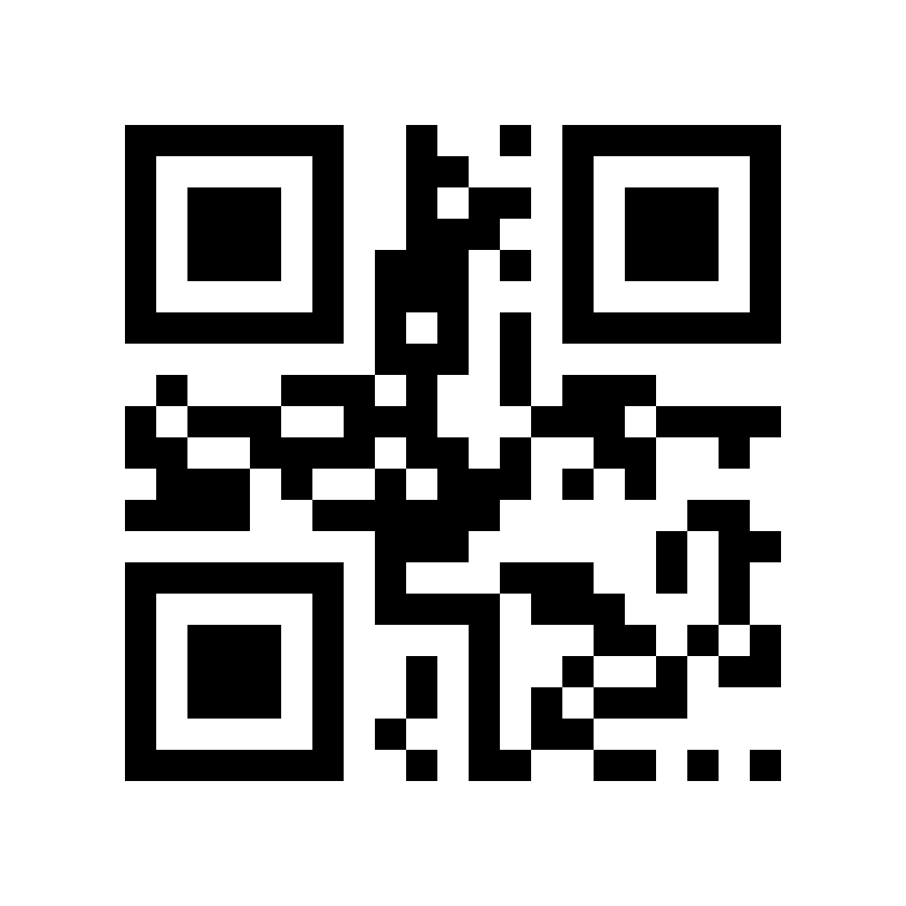
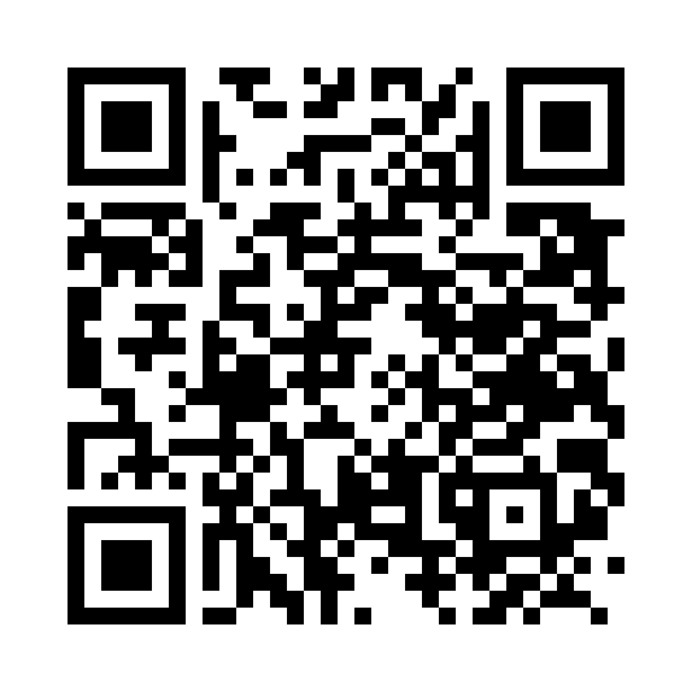
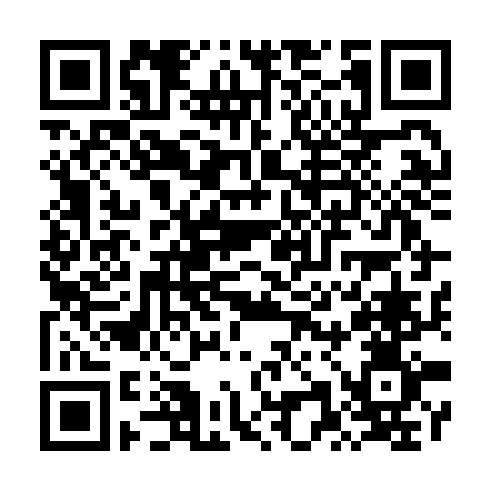

Teste de QR Code
Aponte a câmera do celular para cada um e me diga quais abriram o site.
Por que 5 códigos?
Todos apontam para o mesmo site e todos passaram na validação técnica. O que muda é a
densidade: menos quadradinhos = mais fácil de ler, principalmente de longe.
Se o primeiro (HELLO) ler e os outros não, o problema é densidade — não o código.
Diagnóstico
A · Teste mínimo

Versão 1 · 21×21 módulos · correção H
O menor QR que existe.
não abre site — mostra o texto "HELLO"
Recomendado p/ telão
C · URL completa, correção L
Versão 3 · 29×29 módulos · correção L (7%)
Em 2×2 m: 54 mm por quadradinho
lancamentos.imoveisvivamerica.com.br
Alternativa
B · Endereço curto
Versão 3 · 29×29 módulos · correção L
Sem "https://" — o celular completa sozinho.
lancamentos.imoveisvivamerica.com.br
Alternativa
D · URL completa, correção M

Versão 4 · 33×33 módulos · correção M (15%)
Equilíbrio entre tamanho e tolerância a falha.
lancamentos.imoveisvivamerica.com.br
O que enviei antes
E · Correção máxima

Versão 6 · 41×41 módulos · correção H (30%)
O mais denso — e o que não funcionou para você.
lancamentos.imoveisvivamerica.com.br
📐 Tamanho do quadradinho num telão de 2 × 2 metros
Quanto maior o quadradinho, de mais longe a câmera lê. Regra prática: dá para ler
a uma distância de até 10× a largura do código — ou seja, cerca de 20 metros em qualquer um destes.
| A · 21×21 (+ margem) = 29 módulos | 69 mm |
| C e B · 29×29 (+ margem) = 37 módulos | 54 mm |
| D · 33×33 (+ margem) = 41 módulos | 49 mm |
| E · 41×41 (+ margem) = 49 módulos | 41 mm |
A margem branca ao redor faz parte do código e não pode ser removida na arte —
sem ela, muitos leitores não encontram o código.